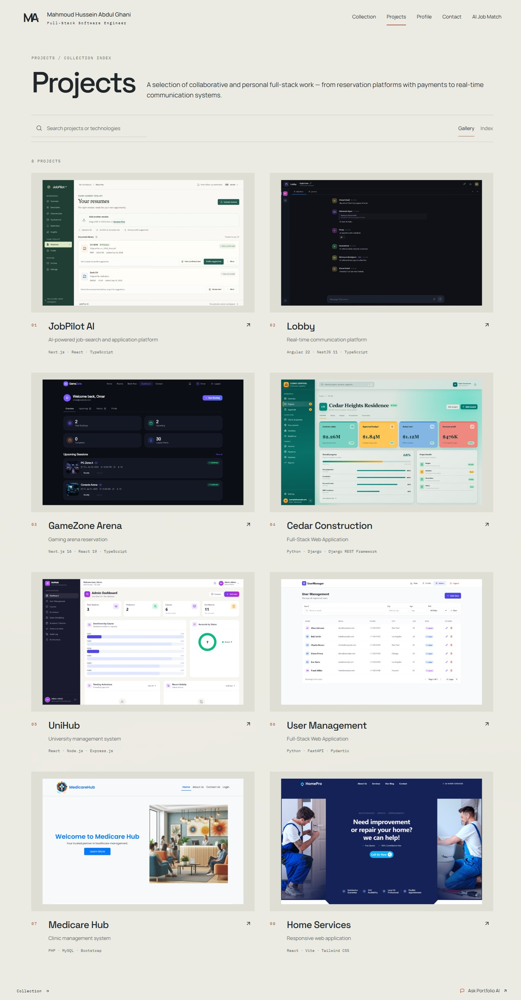
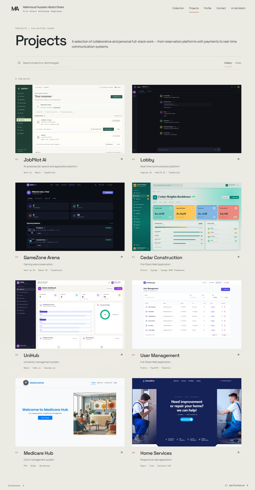
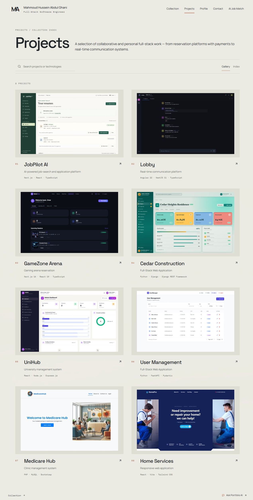
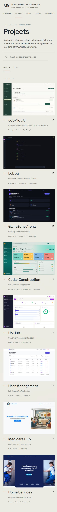
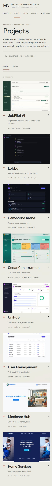

Eight complete screenshots, borderless
Accepted refinement · 8 October 2026. The wide gray matte has been removed from every gallery cover. All eight complete source captures now fill 1600 × 1000 masters directly, with flat square edges and unchanged product proportions. No CSS zoom, screenshot cropping, additional outline or shadow. Existing keyboard focus remains visible.
Complete-gallery images expand the existing scroll container for capture only. Viewport links show the actual application. Earlier matte comparisons and checks remain in refinement-2 as historical evidence.
1363 × 936


Original viewport


Original viewport
1280 × 720


Original viewport


390 × 844
 Original viewport
Original viewport


Original viewport
360 × 800
 Original viewport
Original viewport


Original viewport
Original captures retained
All eight original high-resolution files were checked against their recorded SHA-256 values before rebuilding. The sources and case-study screenshots are unchanged; all captures already have a 16:10 aspect ratio, so the entire image can be resized without cropping or stretching.
| Project | Verified source | Complete capture to master | Asset |
|---|---|---|---|
| JobPilot AI | Fresh local frontend capture at /resumes; existing pdfResume and docxResume fixtures from frontend/tests/resumes.test.tsx | 3072 × 1920 → 1600 × 1000 | Full borderless master |
| Lobby | Fresh isolated Angular frontend; exact text and reply/reaction reused from the already-published public/projects/lobby/community-chat.webp | 3072 × 1920 → 1600 × 1000 | Full borderless master |
| GameZone Arena | Fresh isolated Next frontend /dashboard; two booking entries reconstructed from the published original user_overview.webp, using repository room images | 3072 × 1920 → 1600 × 1000 | Full borderless master |
| Cedar Construction | Fresh rendering of the repository’s .visual-comparison/local-project-detail.html with its actual static styles and scripts | 3072 × 1920 → 1600 × 1000 | Full borderless master |
| UniHub | Fresh isolated React frontend; dashboard responses reuse the approved Admin.webp figures and six course/chart entries | 3072 × 1920 → 1600 × 1000 | Full borderless master |
| User Management | Fresh isolated current React frontend /admin; first six nondeleted records from the repository’s original demo dataset at f7fab69:src/services/api.js | 3072 × 1920 → 1600 × 1000 | Full borderless master |
| Home Services | Fresh read-only homepage at https://home-services-coral.vercel.app/ | 3072 × 1920 → 1600 × 1000 | Full borderless master |
| Medicare Hub | Fresh read-only public homepage at https://clinic-management-system.kesug.com/ | 2560 × 1600 → 1600 × 1000 | Full borderless master |


Medicare continues to use its verified public homepage. Protected projects retain their previously disclosed public/repository fixtures. Full treatment metadata.
Verification
123/123 Chrome desktop/tablet/phone tests and 28/28 WebKit desktop/phone gallery and public-interaction tests passed. Lint, typecheck, build and both image regression tests passed. All 56 delivery files decode at the intended dimensions. The Command Palette test now waits for rendered navigation before invoking its shortcut; a targeted Chrome followup also passed. Check results · Phone geometry.
Ten DPR 3 phone and landscape layouts in Chrome and Windows WebKit retained all eight complete images, with no horizontal overflow or page errors. Physical phones, native keyboards and browser chrome remain unverified. No merge, manual deployment, production Contact submission or live CMS/database modification.